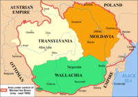

Istoric
În timpul domniei lui Mihai Viteazul la 27 mai 1600, s-a realizat pentru prima data unirea politica a celor trei tari romanesti cu un singur conducator. In punctul cel mai inalt al destinului sau Mihai Viteazul se intitula intr-un hristov emis la 27 mai "Domn al Tarii Romanesti, Ardealului si Moldovei" si isi confectiona bine cunoscuta pecete pe care figureaza cele 3 tari romane surori.
Mihai Viteazu (n. 1558, Drăgoeşti, Vâlcea- 9 august 1601, Câmpia Turzii), este una dintre cele mai marcante personalităţi ale istoriei româneşti. Ca nume şi origine este considerat ca fiind un descendent al familiei Pătraşcu, una dintre cele mai înstărite din Ţara Româneasca din acea perioadă, Mihai Pătraşcu fiind considerat cel mai mare latifundiar al acelei perioade.
A fost ban de Mehedinţi, stolnic domnesc şi ban al Craiovei, apoi domnitor al Ţării Româneşti şi, pentru o scurtă perioadă în 1600, conducător al tuturor celor trei ţări ce urmau să formeze România de astăzi: Ţara Românească, Transilvania şi Moldova.
re Vechi documente istorice, aflate în custodia Academiei Române, precum şi specificaţiile din Condica episcopiei Râmnicului, atesta că Mihai Viteazul s-a născut la Drăgoeşti, localitate aflată pe partea stângă a Oltului, judeţul Vâlcea. Aceleaşi surse mai specifică faptul că la Proieni, pe Valea Oltului, într-o veche biserică ortodoxă s-a cununat cu Doamna Stanca. Potrivit istoricilor, ar fi fost fiul nelegitim al domnitorului Pătraşcu cel Bun, iar după alţii, ar fi fost fiul lui Pârvu Buzescu, tatăl fraţilor Buzeşti. Mama sa, numită Teodora, a făcut parte din familia Cantacuzinilor, soră cu Iane Cantacuzino. Fiind simultan domnitor în Ţara Românească (1593 - 1601), Transilvania (1599 - 1600) şi Moldova (1600), Mihai Viteazul a realizat pentru prima dată unirea unui teritoriu apropiat ca întindere de cel al României de astăzi, fiind perceput de mulţi români ca unul dintre cei mai importanţi eroi naţionali.
Din acest motiv, el este considerat de istoriografia românească primul unificator al poporului român şi erou naţional.
